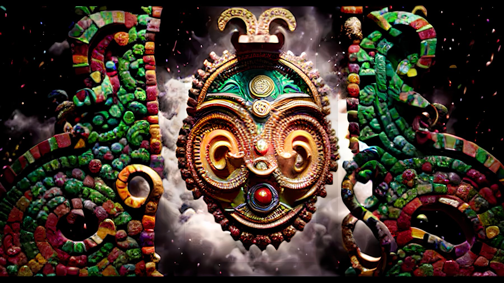
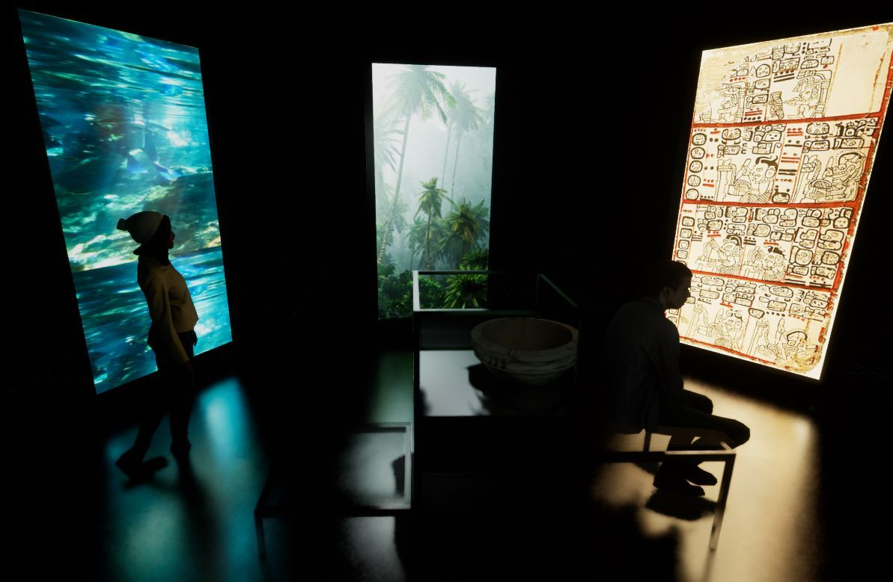
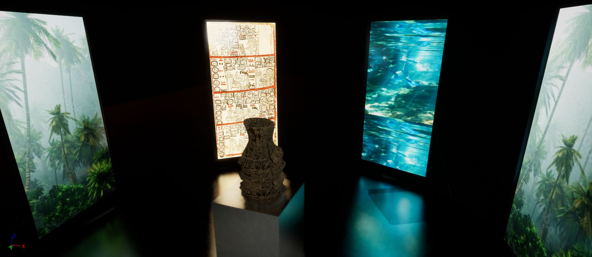
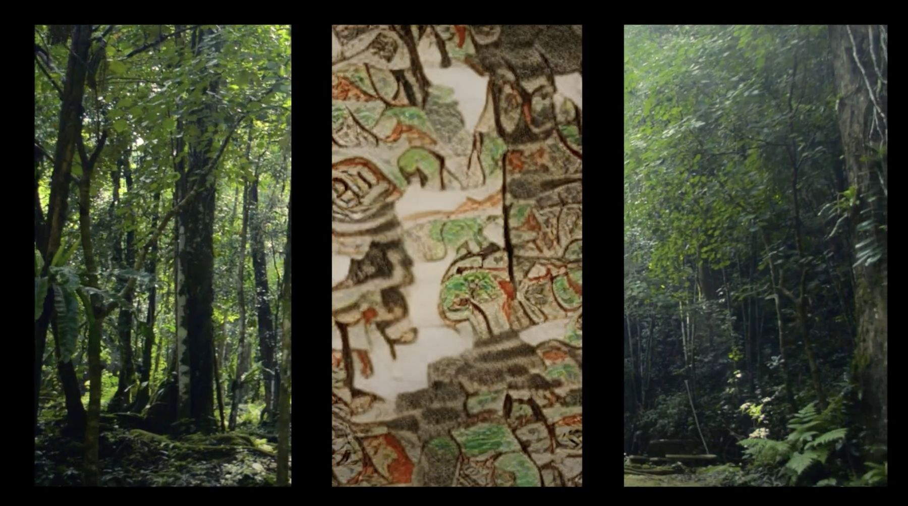

Cenote Reflections: A Prehispanic Science Fiction Journey

Cenote Reflections explores an abstract cenote ritualistic space formed by a reflective patterned circle on the floor and a cross-shaped center surrounded by five screens, an important number in the Wirarika's shaman culture looking for the "gift of seeing." It aims to create a narrative space and establish a larger work's basis on the prehispanic science fiction genre.
Immersive Installation
3D Ceramic Printing. AI Development. Animation Development. Computer for Unreal, TouchDesigner, and AI models. Video and Photography.
Cenotes
In this piece, fictional futures, hyperrealistic natural CGI environments, and AI latent spaces explore the notion of Cenote, a surface connection to subterranean water bodies derived from the Mayan word "tz'onot" (meaning "well" or "abyss"). Cenotes were also considered the entrance to the underworld and where the gods would visit. They became sacred sites where offerings and rituals were performed to please the gods. A Cenote is a passage, a throat, to communicate with other dimensions.


The Space
In this symbolic space, one screen displays a generative text created by a machine learning model trained on pre-Hispanic heritage materials and current transcripts from the UN Permanent Forum on Indigenous Issues. The text is constantly evolving to prevent cultural stagnation.
The floor contains a pattern with capacitive sensors that allow visitors to interact with the installation's images, the generative sound design of cenote field recordings, and the narrative. The pattern breaks the screen's visual impact allowing for a non-hierarchical reading of the piece.

New ways of observing.
Our general representation of the future is often clouded by visions derived from European and North American perspectives on progress. Through this lens, Latin America has been consumed as a homogenous and exotic space, unable to develop its own perspectives on a future derived from its roots.
Bigger picture
This piece is part of a larger project on expanded prehispanic science fiction that opens up a dialogue with the knowledge, myths and issues of indigenous communities where ancestral knowledge is reactivated through contemporary generative exploration to envision possible alternative futures. A definition that is inclusive and able to process identities and otherness as an ontological and political creative issue.
Exhibitions
- AI Robot Roadshow. AI for Good Global Summit 2023, Geneva, Switzerland Participating visual artist. Event concept: Jovanka v. Wilsdorf and David Hanson.
- AI Robot Roadshow, video